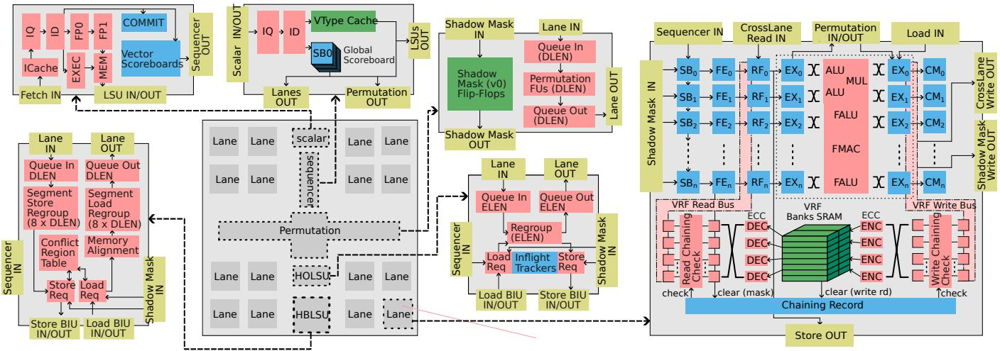

Titan-l: An Open-Source, High Performance RISC-V Vector Core 论文解析¶
0. 论文基本信息¶
作者 (Authors): Jiuyang Liu, Qinjun Li, Yunqian Luo, et al.
发表期刊/会议 (Journal/Conference): MICRO
发表年份 (Publication Year): 2025
研究机构 (Affiliations): Huazhong University of Science and Technology, Institute of Software, Chinese Academy of Sciences, Tsinghua University, Xinpian Technology Co., Ltd.
1. 摘要¶
目的
- 解决传统向量处理器在扩展 VLEN (Vector Length) 和 DLEN (Datapath Width) 时面临的 路由拥塞、控制逻辑开销过大 以及 ILP (Instruction-Level Parallelism) 等核心挑战。
- 设计一个能够同时高效扩展 ILP 和 DLP (Data-Level Parallelism) 的开源、高性能 RISC-V Vector(RVV) 核心，以在 HPC 和 密码学 等领域超越现有 GP-GPU 和其他向量处理器。
方法
- 提出 Titan-I(T1) 架构，一个基于 Lane 的 OoO(Out-of-Order) RVV 核心生成器，并引入多项微架构创新：
- 为提升 DLP:
- 采用 粗粒度布局规划求解器(coarse-grained floor-planning solver) 优化跨 Lane 数据通路，减少关键路径延迟。
- 集成 全数据通路宽度的置换单元(datapath-wide permutation unit)，原生支持高吞吐的 shuffle 操作，避免通过内存中转。
- 引入 掩码寄存器影子缓存(shadow cache for mask registers)，消除跨 Lane 广播瓶颈。
- 为提升 ILP:
- 实现 细粒度链接(fine-grained chaining)，在 Lane 数据通路粒度上调度依赖的 uop，最大化指令重叠。
- 采用 发射即提交(issue-as-commit) 机制，配合紧凑的 向量记分牌(vector scoreboards)，实现标量与向量流水线的低开销协同。
- 融合 向量配置指令 与后续指令，暴露跨 convoy 的并行性。
- 设计 内存交错(memory interleaving) 和 延迟槽转发(delay-slot forwarding) 机制，提高内存子系统利用率并容忍长延迟访问。
- 为提升 DLP:
- 通过 Chisel 和 CIRCT 构建高度参数化的敏捷开发流程，并完成了两个不同工艺节点（TSMC 28nm, HLMC 28nm SONOS）的 ASIC 流片验证。
 Figure 3: Architecture of T1
结果
- 性能对比:
- 密码学工作负载: 在 NTT 和 MMM 基准测试中，T1 (DLEN=1024, VLEN=16384) 相比 Nvidia GA102(RTX 3090) 和 GB202(RTX 5090) GP-GPU 分别实现了最高 2.41倍 和 1.85倍 的加速。
- HPC 工作负载:
- 与 HiSilicon TaiShan V120(KP920) 相比，在相同数据通路宽度下性能相当，但面积仅为后者的 19%；当 T1 的 DLEN 扩展 4 倍后，性能提升 4.59倍。
- 与 SpacemiT X60(K1) 相比，在纯 DDR 模式下，性能优势高达 8.05倍，展现了卓越的 内存延迟容忍度。
- 面积效率:
- T1 在密码学应用中的面积仅为 Nvidia GA102 单个 SM 面积的 40%。
- 其微架构创新（如影子掩码、粗粒度布局）有效控制了面积随 DLEN/VLEN 的增长，实现了近似线性的面积扩展。
 Figure 8: Cryptographic Benchmarks of T1 (DLEN1K, VLEN16K,emulated with DDR4-3200) with GA102 (NVIDIA GTX 3090) and NVIDIA GB202 (GTX 5090)
Figure 8: Cryptographic Benchmarks of T1 (DLEN1K, VLEN16K,emulated with DDR4-3200) with GA102 (NVIDIA GTX 3090) and NVIDIA GB202 (GTX 5090)
 Figure 9: HPCbenchmark results: Figure 9a: PerformanceofT1(at2.45GHz) with local memoryand DDR4-3200,normalized to KP920; Figure 9b: Performancecomparison ilustrating T1's tolerance to memorylatency,showing results with DRAMand local SRAM,normalized to KP920,Ituses stripmining bydynamicallyset VLforcontinues DRAMaccessinSGEM workload.; Figure 9c: Performance of T1(at 1.6 GHz) using DDR4-3200, normalized to K1, where higher is better.
Figure 9: HPCbenchmark results: Figure 9a: PerformanceofT1(at2.45GHz) with local memoryand DDR4-3200,normalized to KP920; Figure 9b: Performancecomparison ilustrating T1's tolerance to memorylatency,showing results with DRAMand local SRAM,normalized to KP920,Ituses stripmining bydynamicallyset VLforcontinues DRAMaccessinSGEM workload.; Figure 9c: Performance of T1(at 1.6 GHz) using DDR4-3200, normalized to K1, where higher is better.
结论
- Titan-I (T1) 成功证明了通过创新的微架构设计，可以在 RISC-V Vector 平台上同时高效地扩展 ILP 和 DLP，从而在关键计算密集型领域（如密码学和 HPC）实现对 GP-GPU 和现有向量处理器的显著性能和能效优势。
- T1 的 开源 RTL 和完整的软件栈（包括 MLIR 编译器和 PyTorch 前端）为硬件-软件协同设计提供了强大基础，凸显了 RISC-V Vector 架构在构建可持续、高效率 HPC 未来的巨大潜力。
2. 背景知识与核心贡献¶
研究背景与动机
- Vector processing 作为一种经典的并行计算范式，正通过 RISC-V Vector (RVV) 和 ARM SVE 等现代 ISA 重新焕发活力。然而，将向量处理扩展到当代工作负载（如 HPC 和 Cryptography）时，传统架构面临严峻挑战。
- 现有设计在扩展 VLEN (向量寄存器长度) 和 DLEN (数据通路宽度) 时遭遇瓶颈：
- Superscalar CPUs：其庞大的 speculation 逻辑（如 ROB、重命名表）在处理超宽向量时导致面积和功耗急剧膨胀，例如 ARM A725 和 Xiangshan KunMingHu 被限制在较小的 datapath。
- GP-GPUs：虽然提供高吞吐，但其 SIMT 编程模型复杂，且缺乏高效的 permutation 指令支持，常需通过本地内存交换数据，效率低下。
- 现有 RVV Core：如 ETH's Ara 完全放弃了 ILP；Berkeley's Saturn 的 chaining 粒度太粗；而 SpacemiT X60 等商业核心则普遍缺乏对 fine-grained ILP 的支持。
- 核心矛盾在于：单纯扩大 DLEN 虽能提升 DLP，但若不配套优化 ILP 调度和解决物理层面的 routing contention（特别是 permutation instructions 和 mask register v0 的跨 Lane 访问），性能提升将被控制逻辑开销和延迟所抵消。
核心贡献
- 提出并实现了 Titan-I (T1)，一个开源、高性能、out-of-order (OoO) 的 lane-based RISC-V Vector Core 生成器，旨在同时高效扩展 Instruction-Level Parallelism (ILP) 和 Data-Level Parallelism (DLP)。
- 针对 DLP 扩展的物理层挑战，提出三项创新：
- Coarse-grained floor-planning solver：通过启发式算法优化 Lane 布局，显著降低 widen/narrow 等指令的跨 Lane 最大路由延迟（从 7 降至 4 个单位），实现近似线性的面积扩展。
- Datapath-wide permutation unit：提供专用的全带宽数据重排硬件，原生支持 VRGATHER, VCOMPRESS 等动态和静态置换操作，避免了 GP-GPU 中低效的内存往返。
- Shadow cache for mask register (v0)：在置换单元中为 v0 维护影子副本，消除了谓词执行时昂贵的跨 Lane 广播，将 VRF 带宽开销降低了约 50%。
- 针对 ILP 调度挑战，引入一套向量专用的 OoO 技术：
- Fine-grained chaining：在 ELEN × ScaleFactor 的粒度上管理数据依赖，允许乱序写回，最大化 banked VRF 的带宽利用率。
- Issue-as-commit：对于不影响标量状态的向量指令，一旦进入向量发射队列即视为提交，通过轻量级 vector scoreboards 实现标量与向量流水线的高效解耦和并发执行。
- Memory interleaving：通过 Conflict Region Table (CRT) 允许无冲突的 Load/Store 指令并发执行，充分利用双通道内存带宽。
- Memory delay-slot forwarding：结合 CSR “chicken bit”，允许在长延迟的 indexed memory access 执行期间，继续发射和执行后续的独立指令，有效隐藏延迟。
- 原型验证与性能优势：T1 在真实芯片上得到验证，并展现出卓越性能：
- 在 Cryptography 工作负载上，以 40% 的 GA102 (Nvidia 3090) SM 面积，实现了最高 2.41× 的性能提升。
- 在 HPC 工作负载上，仅用 HiSilicon TaiShan V120 (KP920) 19% 的面积即可实现相当性能，并在 4× datapath 扩展后获得 4.59× 加速。
- 对内存延迟表现出极强的容忍度，在纯 DDR 模式下相比 SpacemiT X60 (K1) 性能提升高达 8.05×。
Figure 3: Architecture of T1
 Figure 6: Different ILP Technology in T1. Chaining interleaves Vo,V1,and V2.Memory Interleaving mitigates the VSW-VLD dependency. Vector-Scalar OoO interleaves the vector and scalar pipelines until a true dependency v16-s64- v15 occurs.Memory Delay Slot parallelizes vector index load/store (VIDxo) with independent vector executions (VEX0).
Figure 6: Different ILP Technology in T1. Chaining interleaves Vo,V1,and V2.Memory Interleaving mitigates the VSW-VLD dependency. Vector-Scalar OoO interleaves the vector and scalar pipelines until a true dependency v16-s64- v15 occurs.Memory Delay Slot parallelizes vector index load/store (VIDxo) with independent vector executions (VEX0).
3. 核心技术和实现细节¶
0. 技术架构概览¶
整体架构概览
Titan-I (T1) 是一个 Lane-based、Out-of-Order (OoO) 的 RISC-V Vector (RVV) 架构生成器，其核心目标是同时扩展 Instruction-Level Parallelism (ILP) 和 Data-Level Parallelism (DLP)。其顶层架构如图所示： Figure 3: Architecture of T1
主要组成部分
-
Scalar Core (标量核):
- 位于架构顶部，负责指令获取（Fetch）、解码（ID）、标量执行（EXEC）和提交（COMMIT）。
- 集成了创新的 Vector Scoreboards，以实现与向量流水线的高效协同。
-
Sequencer (向量序列器):
- 作为向量控制中心，负责向量指令的解码和分发。
- 管理依赖关系，并支持 Vector Configuration Instruction Fusion（向量配置指令融合）和 VType Cache。
-
Vector Lanes (向量 Lane):
- 围绕在架构四周，是并行计算的核心单元。
- 每个 Lane 包含独立的流水线、Banked VRF（分块向量寄存器堆）、异构 VFU（向量功能单元）和 Linked-List Scoreboards（链表式记分牌）。
- 支持 Speculative Zero-Mask Elision（推测性零掩码省略）以优化稀疏计算。
-
Permutation Unit (置换单元):
- 位于架构中央，是解决跨 Lane 数据移动瓶颈的关键模块。
- 包含一个 DLEN-width Crossbar（DLEN 宽度交叉开关）和专用的功能单元。
- 集成了 Shadow Mask (v0)（影子掩码寄存器），用于高效处理 RVV 的掩码操作。
-
Memory Subsystem (内存子系统):
- 采用双 LSU（Load-Store Unit）设计以应对不同的访存模式：
- High Bandwidth LSU (HBLSU): 针对 unit-stride 访问进行优化，支持 Memory Interleaving（内存交织）以同时利用加载和存储通道。
- High Outstanding LSU (HOLSU): 针对 constant-stride 和 indexed 访问进行优化，支持大量未完成事务，并通过 Memory Delay Slot（内存延迟槽）机制来隐藏长延迟。
- 采用双 LSU（Load-Store Unit）设计以应对不同的访存模式：
关键技术特性
-
可扩展的物理设计:
- 采用 Coarse-Grained Floor-Planner（粗粒度布局规划器）来最小化跨 Lane 访问的最坏情况布线延迟，确保在增加 DLEN 时性能近乎线性扩展。
- Permutation Unit 通过增加流水线级数来换取面积，保证在高 DLEN 下的时序收敛。
-
增强的 ILP 调度:
- Fine-Grained Chaining（细粒度链接）：在 ELEN × ScaleFactor-bit 粒度上管理数据依赖，允许乱序写回，最大化 VRF 带宽利用率。
- Issue-as-Commit（发射即提交）：对于不影响标量状态的向量指令，一旦发射到向量队列即视为提交，允许标量流水线继续执行，极大提升了标量-向量协同效率。
- Memory Interleaving & Delay Slots：通过硬件和编译器协同，有效隐藏内存访问延迟，提升内存子系统利用率。
-
高效的 Lane 实现:
- Banked VRF 配备了 Fine-Grained Chaining Scoreboard、Transient ECC Protection（瞬态 ECC 保护）和 Decoupled VRF SRAM Domain（解耦的 VRF SRAM 域），后者支持 DVFS 和深度睡眠模式，在保持状态的同时大幅降低功耗。
1. Coarse-Grained Floor-Planning Solver¶
核心观点
-
Coarse-Grained Floor-Planning Solver 是 Titan-I (T1) 架构中用于解决 ultra-wide-lane 设计下 routing contention 问题的关键创新。其核心目标是通过优化物理布局（floorplan），最小化最坏情况下的跨lane路由延迟，从而为 permutation instructions（如 widen/narrow）提供低延迟的数据通路，并最终支持 DLEN 的线性可扩展性。
-
 Figure 2: Static Cross Lane Access For widen and narrow; In this access pattern, the i-th lane accessing the (2i mod n)-th and (2i + 1 mod n)-th lane.
实现原理与算法流程
Figure 2: Static Cross Lane Access For widen and narrow; In this access pattern, the i-th lane accessing the (2i mod n)-th and (2i + 1 mod n)-th lane.
实现原理与算法流程 -
该求解器被定义为一个 heuristic solver（启发式求解器），因为精确的 floorplanning 问题在计算上是 NP-complete 的，无法对大规模设计进行穷举搜索。
-
其基本工作流程如下：
- 输入约束：接受用户定义的布局约束（例如芯片的长宽比、I/O位置等）。
- 随机初始化：在满足约束的前提下，对所有 lane 的初始位置进行随机排列。
- 迭代放置：按顺序逐个放置每个 lane：
- 如果当前待放置的 lane 在已放置的 lanes 中有邻居（即在逻辑上需要频繁通信），则将其放置在能 最小化到这些已放置邻居的最大曼哈顿距离 (x+y distance) 的位置。
- 如果没有已放置的邻居，则在现有布局空间的相邻位置中随机选择一个进行放置。
- 并行探索：该求解器支持在多核或多台机器上并行执行，以高效地探索庞大的解空间，寻找一个足够优化的布局方案。
-
该算法的核心思想是 局部优化，通过确保每个新放置的单元与其关键通信伙伴的距离尽可能近，来全局性地控制最坏情况的通信延迟。
参数设置与效果
- 该求解器本身是一个独立的物理设计工具，其“参数”主要体现在用户提供的初始约束和目标函数（即最小化最大路由距离）上。
- 其效果直接体现在物理布局和性能指标上：
- 在一个 32 lanes 的设计中，与朴素的线性布局相比，该求解器能将 maximum cross-lane latency 从 7 routing units 降低到 4 routing units。
- 这一优化直接带来了 ~12% 的 “widen” 和 “narrow” 指令的 整体指令延迟降低。
- 对于更大 DLEN 的设计，性能提升更为显著，可减少近 20% 的相关指令执行周期。


输入输出关系及在整体架构中的作用
- 输入：
- 逻辑网表信息：特别是关于哪些 lane 之间存在高带宽、低延迟的通信需求（主要来自 permutation unit 的连接模式）。
- 物理设计约束：芯片面积、形状、电源/时钟网络规划等。
- 输出：
- 优化的物理布局 (Floorplan)：一个具体的、每个 lane 在芯片上的坐标位置方案。
- 在 T1 整体架构中的作用：
- 赋能 Permutation Unit：高效的 floorplan 是 Permutation Unit 能够以 DLEN-sized crossbars 提供全带宽 shuffle 支持的物理基础。没有此优化，跨 lane 数据移动将成为性能瓶颈。
- 支撑 DLP 扩展：通过解决 routing contention，使得增加 lane 数量（从而增加 DLEN）不会导致通信延迟呈非线性爆炸式增长，实现了 DLEN 的 linear area scaling（如 Figure 4b 所示）。
- 提升能效比：更短的互连线意味着更低的动态功耗和更小的信号延迟，直接提升了处理器的能效比和最高工作频率。
2. Datapath-Wide Permutation Unit with Shadow Mask Cache¶
核心设计动机与挑战
- 传统的 lane-based RISC-V Vector 设计在扩展 DLEN（Datapath Width）和 VLEN（Vector Length）时，会面临严重的 routing contention（布线拥塞）问题。
- 其中两大瓶颈源于：
- Permutation Instructions（如
VRGATHER,VCOMPRESS）：需要在不同 lane 之间进行大规模数据重排，跨 lane 数据移动成本高昂。 - Mask Register (v0)：RVV 规范将
v0用作谓词掩码寄存器。在 lane-based 设计中，v0被均匀分布在所有 lane 上。当一条指令需要使用v0进行谓词执行时，每个 lane 必须从其他多个 lane 收集其所需的掩码位，这导致了灾难性的 cross-lane broadcast bottleneck（跨通道广播瓶颈），尤其是在 ultra-large lane 设计中。
- Permutation Instructions（如
Datapath-Wide Permutation Unit 的实现原理
- T1 架构引入了一个中央化的、专用的 Permutation Unit，其数据通路宽度与 DLEN 完全匹配，直接解决了跨 lane 数据移动的路由问题。
- 该单元位于芯片布局的中心（见图3），战略性地最小化了从任意 lane 到该单元的最大数据传输延迟。
- Figure 3: Architecture of T1
- 其内部包含两个关键组件：
- DLEN-sized Crossbar：一个大型交叉开关，用于高效执行静态的、基于位置的数据重排操作（如
widen/narrow指令，见图2）。 - Specialized Functional Units (Permutation FUs)：专门的计算单元，用于处理需要逻辑运算的动态重排指令（如
compress需要计算输出位置，reduce需要聚合部分结果）。
- DLEN-sized Crossbar：一个大型交叉开关，用于高效执行静态的、基于位置的数据重排操作（如
- 为了支持更大的 DLEN 并保持时序收敛，该单元采用了可配置的流水线深度，通过增加面积来换取线性可扩展性，确保性能不会因布线延迟而下降（见图4b）。
 Figure 4: Linearly Area Scaling of T1 design parameters,evaluated at TSMC N28 SVT technology at 65% utilization.Four cases are examined:(1)when varying VLEN,DLEN is held at 128,y-asix on the left-hand represents the total area of T1,whereas the right-hand y-axis isolates the area of Lane and Permutation;(2)when varying DLEN,the ratio VLEN/DLEN remains 1; (3)when examining LaneScale,both VLEN and DLE are set to 1024,y-asix on the left-hand represents the total area of T1,whereas the right-hand y-axis isolates the area of Lane;and(4)when asesing ChainingSize,VLEN and DLEN are maintained at 1024.
Figure 4: Linearly Area Scaling of T1 design parameters,evaluated at TSMC N28 SVT technology at 65% utilization.Four cases are examined:(1)when varying VLEN,DLEN is held at 128,y-asix on the left-hand represents the total area of T1,whereas the right-hand y-axis isolates the area of Lane and Permutation;(2)when varying DLEN,the ratio VLEN/DLEN remains 1; (3)when examining LaneScale,both VLEN and DLE are set to 1024,y-asix on the left-hand represents the total area of T1,whereas the right-hand y-axis isolates the area of Lane;and(4)when asesing ChainingSize,VLEN and DLEN are maintained at 1024.
Shadow Mask Cache (v0) 的算法流程与作用
- 核心思想：将全局的掩码寄存器
v0在 Permutation Unit 内部维护一份完整的“影子”副本（Shadow Mask），作为专用的 register cache。 - 写入流程：
- 当任何 lane 执行一条写入
v0的指令时，它会通过专用的 Lane-to-Permutation data channel 将更新数据发送给 Permutation Unit。 - Sequencer（序列器）会监控所有写
v0的指令，并确保在所有待定的v0写操作完成之前，任何依赖v0的谓词指令都不能执行，以此保证正确性。
- 当任何 lane 执行一条写入
- 读取流程：
- 当一条谓词指令需要
v0时，各 lane 不再需要相互通信。 - Permutation Unit 直接利用其内部的 Shadow Mask 副本，通过已有的物理通道将所需掩码位分发给各个 lane。
- 当一条谓词指令需要
- 关键优势：
- 彻底消除了跨 lane 的 v0 广播流量，解决了历史性的布线瓶颈。
- 显著降低了 VRF (Vector Register File) 的读取压力，因为不再需要为每个谓词指令发起多达
4×VLEN次的分散读取操作。 - 提升了带宽：据文中所述，在 Permutation Unit 中仅增加 8% 的面积开销，就能为谓词指令带来约 50% 的带宽提升（见图4a）。
输入输出关系及在整体架构中的作用
- 输入：
- 来自各个 lane 的源数据。
- 来自 Sequencer 的控制信号（flit），用于分配指令和协调操作。
- 对于动态指令（如
vrgather），还需要来自 lane 的索引操作数。
- 输出：
- 经过重排或计算后的目标数据，直接广播回各个 lane 的 VRF 写端口。
- 对于
reduce等指令，最终结果会被发送到指定的 lane（通常是第一个）。
- 在整体架构中的作用：
- 性能加速器：通过原生硬件支持高吞吐量的 permutation 操作，避免了像 GPGPU 那样通过低效的 memory-swap-based emulation（基于内存交换的模拟）来实现，从而在密码学等重度依赖数据重排的工作负载中获得巨大优势（见图8）。
- 可扩展性基石：Permutation Unit 和 Shadow Mask Cache 共同构成了 T1 能够线性扩展 DLEN 和 VLEN 的关键微架构创新，使得超宽向量核心的设计成为可能，而不会被控制逻辑和布线复杂度所拖垮。
3. Fine-Grained Chaining Microarchitecture¶
实现原理与核心机制
- T1 的 Fine-Grained Chaining Microarchitecture 旨在解决传统向量处理器在扩大 DLEN 后，因指令级并行度（ILP）不足而导致硬件资源浪费的问题。
- 其核心思想是将数据依赖的管理粒度从整个向量寄存器（VRF）级别，细化到 ELEN × ScaleFactor-bit 的子字（sub-word）级别。这里的 ScaleFactor 是一个可配置的微架构参数，直接决定了链式（chaining）的粒度。
- 通过这种细粒度管理，允许不相关的数据元素在向量功能单元（VFU）执行完成后，立即进行 out-of-order writebacks（乱序写回）到 VRF，而无需等待整条向量指令完全执行完毕。
- 这种机制极大地提升了 banked VRF 的带宽利用率，因为多个年轻指令可以并行地从 VRF 中读取已被写回的、所需的数据片段，从而实现了高效的 element-wise parallel execution。
算法流程与关键组件
- 每个 Lane 内部都集成了一个 Chaining Scoreboard（链式记分板）。
- 该记分板为每个 ELEN × ScaleFactor-bit 的子字分配一个状态位，用于记录是否有更老的指令正在向该子字写入数据。
- 当一条新指令进入流水线时，其 Chaining Scoreboard 会被初始化。
- 在执行过程中，Pipeline Frontend (FE) 会根据 mask 信息更新记分板，标记出哪些子字是活跃的、需要被写入。
- VRF Write Ports 在完成写回操作后，也会更新记分板，将对应子字的状态位清空。
- 年轻指令在读取操作数前，会查询 Chaining Scoreboard。
- 只有当所有它所依赖的子字的状态位均被清空（即数据已由更老的指令产生），该年轻指令才能安全地从 VRF 读取数据并继续执行。
- 这一过程实现了 fine-grained dependency tracking，确保了数据一致性。
- 为了应对因增大 ChainingSize（即 ScaleFactor）而带来的时序挑战，T1 采用了 pipelined chaining checks（流水线化的链式检查），通过增加少量面积开销来消除流水线停顿。
Figure 6: Different ILP Technology in T1. Chaining interleaves Vo,V1,and V2.Memory Interleaving mitigates the VSW-VLD dependency. Vector-Scalar OoO interleaves the vector and scalar pipelines until a true dependency v16-s64- v15 occurs.Memory Delay Slot parallelizes vector index load/store (VIDxo) with independent vector executions (VEX0).
参数设置与权衡
- ChainingSize（即 ScaleFactor）是一个关键的可调参数，直接影响性能和面积。
- 如 Figure 4c 和 4d 所示，增大 ChainingSize 会带来显著的面积和设计复杂度变化：
- 将 ScaleFactor 从 1 增加到 2 或 4，单个 Lane 的面积分别扩大到 148% 和 215%。
- 然而，由于多个元素可以共享一套控制逻辑，T1 整体的核心面积反而能减少 26% 和 38%。
- 这种权衡意味着 ChainingSize 需要根据目标工作负载进行优化：
- 对于 cryptographic workloads（如 NTT, MMM），由于其对 permutation instructions 的依赖要求指令必须显式退休，且内存访问相对较少，因此倾向于使用较小的 ChainingSize 以最小化面积开销。
- 对于 HPC applications（如 SGEMM, SAXPY），其计算密集且存在大量算术指令间的依赖，增大 ChainingSize 能够充分挖掘 ILP，带来显著的性能提升。
输入输出关系及在整体架构中的作用
- 输入: 该机制的输入是来自 Sequencer 分发的向量微操作（uops），以及这些 uops 所携带的 mask 信息和操作数地址。
- 输出: 输出是经过乱序调度后，高效写回到 Banked VRF 的结果数据，以及更新后的 Chaining Record 状态，供后续指令查询依赖。
- 在整体架构中的作用:
- 最大化 ILP: 作为 T1 架构的核心创新之一，细粒度链式是解锁与宽 datapath 相匹配的 ILP 的关键，使得 T1 能够同时扩展 DLP 和 ILP。
- 提升内存子系统效率: 通过减少因等待整条指令完成而产生的流水线气泡，提高了计算单元的利用率，间接提升了对 High Bandwidth LSU (HBLSU) 和 High Outstanding LSU (HOLSU) 带宽的需求和利用。
- 支撑其他优化: 该机制与 Vector-Scalar OoO Execution 和 Memory Interleaving 等技术协同工作，共同构成了 T1 高效的乱序执行引擎。例如，在 QUANT 工作负载中，结合 Memory Interleaving，整体性能提升了 31%（见 Table 1）。
| 工作负载 (QUANT) | Baseline (cycles) | + Fine-Grained Chaining | + Memory Interleaving | 总提升 |
|---|---|---|---|---|
| Cycle Count | 1000 | 610 (-39%) | 480 (-31% from 610) | 61% |
4. Issue-as-Commit for Scalar-Vector OoO Execution¶
核心机制：Issue-as-Commit 策略
Titan-I (T1) 通过一种名为 “issue-as-commit” 的创新策略，实现了 Scalar（标量）与 Vector（向量）流水线的高效协同乱序执行。其核心思想是将向量指令的“发射”（Issue）动作视为其在向量域内的“提交”（Commit），从而解耦两个流水线，允许它们在无真实数据依赖时并行推进。
- 基本原理：当一条向量指令被分发到向量指令队列（Vector Issue Queue）时，它即被视为已在向量域内“退休”（retired）。此后，该指令的执行进度由一组专用的、紧凑的 Vector Scoreboards 追踪，而非传统的大型 Reorder Buffer (ROB)。
- 目的：此机制旨在消除因标量核等待向量指令完成而导致的虚假依赖（false dependencies）和流水线停顿（stalls），显著提升系统整体吞吐量。
- 硬件开销：该机制仅给标量核增加了约 3% 的面积开销，却能保证在无直接向量-标量依赖时，标量流水线可以不间断地执行。
指令分类与处理流程
为了精确管理不同类型的向量指令及其对系统状态的影响，T1 将向量指令概念上分为三类，并采用不同的处理策略：
- 第一类（最常见）：
- 特征：既不修改标量寄存器（scalar registers），也不修改控制与状态寄存器（CSR）。
- 处理：对于此类指令，“发射”即等同于“提交”。标量核无需为其分配额外的提交阶段资源，可立即继续执行后续独立的标量指令。
- 第二类：
- 特征：可能写入标量寄存器或 CSR（例如，浮点运算可能设置异常标志）。
- 处理：标量核会为此类指令在提交阶段分配专用的 scoreboards。它仅会阻塞那些访问了受影响标量寄存器或 CSR 的、更年轻的标量指令，而其他无关指令可以继续执行。
- 第三类（涉及异常）：
- 特征：可能引发异常（如非法指令、访问错误）。
- 处理：
- 非法指令：由标量解码器在提交前早期检测。
- Unit-stride / Constant-stride 访问：由标量 LSU 在提交前检查，因为异常仅取决于标量源寄存器和指令位。
- Indexed（索引）访问：这是关键难点。由于地址值仅在 Lane 内从 VRF 读出后才可见，硬件必须保守地阻塞其后的所有指令，直到该索引访问指令退休。
- 优化方案：为缓解此序列化瓶颈，T1 在 CSR 中提供了一个 “chicken bit”。当软件能保证正确性时，可设置此位来抑制索引操作的
accessfault异常。此时，后续指令可以与该索引 load/store 进行 chaining，从而隐藏延迟。
Figure 6: Different ILP Technology in T1. Chaining interleaves Vo,V1,and V2.Memory Interleaving mitigates the VSW-VLD dependency. Vector-Scalar OoO interleaves the vector and scalar pipelines until a true dependency v16-s64- v15 occurs.Memory Delay Slot parallelizes vector index load/store (VIDxo) with independent vector executions (VEX0).
内存排序与中断处理
该策略还需确保内存操作的正确性和中断的一致性。
- 内存排序：
- 对于 Unit-stride 和 Constant-stride 向量访问，标量 LSU 会分配 scoreboards 来预留向量内存操作的地址范围。如果更年轻的标量内存操作与之冲突，则会被阻塞；否则可以并行执行。
- 对于 Indexed 访问，由于目标地址无法预知，标量 LSU 会保守地阻塞所有后续的标量内存操作，直到该向量访问退休。
- 中断处理：
- 当中断到达提交阶段时，新指令的发射会被推迟。
- 中断仅在向量单元空闲后才会被真正触发。这种延迟对于作为协处理器的 T1 是可接受的，因为它只接收来自主机处理器的中断。
在整体架构中的作用
“Issue-as-commit” 策略是 T1 实现高 ILP（Instruction-Level Parallelism）的关键一环，它与 Fine-grained Chaining 和 Memory Interleaving 等技术共同构成了 T1 的 OoO 执行引擎。
- 输入：来自 Fetch/Decode 阶段的混合标量和向量指令流。
- 输出：一个被高效解耦的执行环境，其中标量和向量流水线能够根据真实的数据依赖关系而非指令顺序来并行工作。
- 作用：最大化功能单元的利用率，将原本因等待向量长延迟操作而空闲的标量计算资源充分利用起来，从而在不显著增加硬件复杂度的前提下，大幅提升整体性能。
5. Dual LSU with Memory Interleaving and Delay Slots¶
Titan-I (T1) 的内存子系统通过引入两个高度专业化的 Load-Store Unit (LSU)——High Bandwidth LSU (HBLSU) 和 High Outstanding LSU (HOLSU)，并结合 Memory Interleaving 与 Memory Delay Slot 两项关键技术，有效解决了传统向量处理器在扩展数据通路宽度（DLEN）后面临的内存带宽利用率低下和长延迟内存操作阻塞流水线的核心挑战。
双 LSU 架构设计与分工
-
HBLSU (High Bandwidth LSU):
- 目标工作负载: 专为 unit-stride（单位步长）这类高带宽、规则的内存访问模式优化。
- 核心特性: 拥有 DLEN-wide datapath（与向量数据通路同宽），能够在一个周期内完成整个向量寄存器的加载或存储。
- 关键创新: 实现了独立的加载和存储数据路径，并引入 Conflict Region Table (CRT) 来动态追踪和管理内存访问冲突域。这使得不冲突的加载和存储指令可以并发执行，即 Memory Interleaving。
- 作用: 最大化利用片上互连和外部内存（如DDR）的峰值带宽，避免了传统设计中加载和存储交替进行导致的带宽减半问题。
-
HOLSU (High Outstanding LSU):
- 目标工作负载: 专为 constant-stride（固定步长）和 indexed（索引）这类非连续、不规则且延迟极高的内存访问模式优化。
- 核心特性: 采用 ELEN-wide datapath（元素宽度），虽然单次传输带宽较低，但支持大量的 in-flight transactions（飞行中事务）。
- 关键创新: 配备 Inflight Trackers 来管理多个并发的内存请求，并与 Memory Delay Slot 机制协同工作。
- 作用: 通过维持高数量的未完成内存请求来隐藏单个请求的长延迟，并允许后续无依赖的指令继续执行，从而保持计算单元的高利用率。
Figure 3: Architecture of T1
Memory Interleaving (内存交织) 机制
- 实现原理: 在 HBLSU 内部，地址生成逻辑和数据通路被解耦。当一条存储指令和一条加载指令进入 LSU 时，它们会查询共享的 Conflict Region Table (CRT)。
- 算法流程:
- 每条内存指令在分发时，其目标地址范围会被记录到 CRT 中。
- 新到达的指令会检查 CRT，如果其地址范围与任何正在处理的指令不重叠，则被立即允许发出到总线接口单元（BIU）。
- 一旦某条指令的事务完成，其在 CRT 中的记录会被释放，为后续指令腾出空间。
- 效果: 这种机制允许多个不冲突的 load 和 store 操作在时间上完全重叠，显著提升了内存子系统的整体吞吐量。根据论文中的 QUANT 工作负载测试，该技术可将性能提升 31%。
Memory Delay Slot (内存延迟槽) 机制
- 实现原理: 针对延迟最高的 indexed 内存操作，T1 采用了一种软硬件协同的延迟隐藏策略。
- 参数设置与软件协同:
- 硬件层面提供一个 CSR "chicken bit"。当软件能保证 indexed 操作不会引发异常（如越界）时，可以设置此位。
- 设置该位后，硬件将忽略indexed 操作可能产生的
access-fault异常，并解除对其后继指令的阻塞。
- 算法流程:
- 编译器或程序员将 indexed load/store 指令与其后续无数据依赖的独立计算指令（如 VEX0-VEX63）安排在一起。
- 当 indexed 指令在 HOLSU 中启动并产生大量长延迟的内存请求时，后续的独立计算指令可以立即进入执行流水线。
- 计算单元在 indexed 操作漫长的等待期间持续工作，从而有效地“填充”了延迟槽，隐藏了内存访问开销。
- 效果: 该机制将原本串行的“等待-计算”模式转变为“计算-等待（后台）”的并行模式，极大缓解了不规则内存访问对性能的拖累。
输入输出关系及整体作用
- 输入: 来自向量流水线的各类内存指令（unit-stride, constant-stride, indexed, segment）。
- 处理与分流:
- Unit-stride 指令被路由至 HBLSU，利用 Memory Interleaving 实现高带宽、低延迟的规则数据搬运。
- Constant-stride 和 indexed 指令被路由至 HOLSU，利用高并发事务和 Memory Delay Slot 机制来容忍和隐藏其固有的高延迟。
- 输出: 从内存加载的数据送回向量寄存器文件（VRF），或从 VRF 发出的存储数据写入内存。
- 在整体架构中的作用: 双 LSU 设计是 T1 能够同时高效处理 HPC（规则、高带宽）和 Cryptography（不规则、高延迟）等多样化工作负载的关键。它确保了无论面对何种内存访问模式，向量计算单元都能获得持续的数据供给或及时卸载结果，从而最大化 ILP（指令级并行）和 DLP（数据级并行）的协同效应，避免了内存墙成为性能瓶颈。
Figure 6: Different ILP Technology in T1. Chaining interleaves Vo,V1,and V2.Memory Interleaving mitigates the VSW-VLD dependency. Vector-Scalar OoO interleaves the vector and scalar pipelines until a true dependency v16-s64- v15 occurs.Memory Delay Slot parallelizes vector index load/store (VIDxo) with independent vector executions (VEX0).
4. 实验方法与实验结果¶
实验设置
-
评估平台与基线：
- Cryptographic Workloads: 与 NVIDIA GA102 (RTX 3090) 和 NVIDIA GB202 (RTX 5090) 进行对比。T1 配置为 VLEN=16384, DLEN=1024，在 TSMC 7nm 工艺下综合，运行频率 2.45 GHz。GPU 基线通过
nvbench框架在单个 SM 上运行以消除干扰。 - HPC Workloads: 与 HiSilicon TaiShan V120 (KP920, Arm SVE) 和 SpacemiT X60 (K1, RVV) 对比。T1 在不同 DLEN (256-1024 bits) 下进行测试，并调整频率以匹配基线（如与 X60 对比时设为 1.6 GHz）。
- 内存子系统: T1 评估使用 DDR4-3200，不依赖本地 SRAM 或大型 LLC，以凸显其对内存延迟的容忍度。
- Cryptographic Workloads: 与 NVIDIA GA102 (RTX 3090) 和 NVIDIA GB202 (RTX 5090) 进行对比。T1 配置为 VLEN=16384, DLEN=1024，在 TSMC 7nm 工艺下综合，运行频率 2.45 GHz。GPU 基线通过
-
软件栈：
- 提供了完整的 RVV vectorized libc 和基于 MLIR 的编译器栈，支持从 PyTorch 到 RVV assembly 的自动向量化。
- 所有算法（如 NTT, MMM）均使用手工优化的 RVV assembly 实现以确保公平性。
-
物理实现：
- 原型芯片分别在 TSMC 28nm 和 HLMC SONOS 28nm 工艺上流片，详细参数见下表。
 Table 2: Power, Frequency and Area of Testchips.Results are reported by synthsis tools after final DRC, LVS clean up, power is estimated under SAXPY workload.
Table 2: Power, Frequency and Area of Testchips.Results are reported by synthsis tools after final DRC, LVS clean up, power is estimated under SAXPY workload.
- 原型芯片分别在 TSMC 28nm 和 HLMC SONOS 28nm 工艺上流片，详细参数见下表。
结果数据分析
-
Cryptographic Performance:
- 在 Montgomery Modular Multiplication (MMM) 上，T1 相比 GA102 (3090) 实现 1.98× - 2.41× 加速，相比 GB202 (5090) 实现 1.41× - 1.64× 加速。
- 在 Number-Theoretic Transform (NTT) 上（输入大小512），T1 相比 GA102 和 GB202 分别实现 1.74× 和 1.85× 加速。
- 关键优势在于 in-register computation 和高效的 Permutation Unit，大幅减少了对内存子系统的依赖。
Figure 8: Cryptographic Benchmarks of T1 (DLEN1K, VLEN16K,emulated with DDR4-3200) with GA102 (NVIDIA GTX 3090) and NVIDIA GB202 (GTX 5090)
-
HPC Performance:
- vs. HiSilicon KP920: 在相同 DLEN 下，T1 性能可达 KP920 的 51%-213%，但面积仅为后者的 19% (0.265mm² vs 1.43mm²)。当 T1 的 DLEN 扩展至 1024 时，在 PACK 负载上获得 4.59× 的性能提升。
- Memory Latency Tolerance: 即使在纯 DDR4-3200 模式下，1024-bit T1 在 QUANT 负载上的性能也能达到 KP920 的 154%，证明了其强大的内存延迟隐藏能力。
- vs. SpacemiT X60: 在 256-bit DLEN 下，T1 性能是 X60 的 2.02× - 6.36×；当 DLEN 扩展至 1024 时，性能优势扩大到 8.05×。
Figure 9: HPCbenchmark results: Figure 9a: PerformanceofT1(at2.45GHz) with local memoryand DDR4-3200,normalized to KP920; Figure 9b: Performancecomparison ilustrating T1's tolerance to memorylatency,showing results with DRAMand local SRAM,normalized to KP920,Ituses stripmining bydynamicallyset VLforcontinues DRAMaccessinSGEM workload.; Figure 9c: Performance of T1(at 1.6 GHz) using DDR4-3200, normalized to K1, where higher is better.
消融实验 (Ablation Study)
-
Chaining Size 的影响:
- 通过改变 ChainingSize 参数，论文量化了细粒度链式（fine-grained chaining）带来的收益。在 QUANT 负载上，启用 ChainingSize=4 相比无链式设计可获得 61% 的性能提升。
- 增大 ChainingSize 会增加 Lane 的面积开销（约 30% 每步），但能显著提升 ILP。这为不同应用场景（如 Crypto vs HPC）提供了微架构调优的依据。
 Table 1: Cycle count of PACK tests at the T1 configuration DLEN= 256, VLEN= 4096,LaneScale = 1,ChainingSize = 4
Table 1: Cycle count of PACK tests at the T1 configuration DLEN= 256, VLEN= 4096,LaneScale = 1,ChainingSize = 4
-
关键微架构特性贡献:
- Memory Interleaving: 通过允许 load 和 store 指令并发执行，在 QUANT 负载上将带宽利用率提升了 31%。
- Speculative Zero-Mask Elision: 在 Sparse Matrix-Matrix multiplication (SPMM) 负载中，该技术消除了约 95% 的冗余计算。
- Shadow Mask v0: 通过在 Permutation Unit 中缓存 v0，避免了跨 Lane 广播，为每个谓词指令节省了高达 4× VLEN 的 VRF 读操作，带宽提升约 50%。
Figure 6: Different ILP Technology in T1. Chaining interleaves Vo,V1,and V2.Memory Interleaving mitigates the VSW-VLD dependency. Vector-Scalar OoO interleaves the vector and scalar pipelines until a true dependency v16-s64- v15 occurs.Memory Delay Slot parallelizes vector index load/store (VIDxo) with independent vector executions (VEX0).
-
Scalability Analysis:
- 实验验证了 T1 设计的近似线性可扩展性。随着 VLEN 和 DLEN 的增加，核心总面积、Lane 面积和 Permutation Unit 面积均呈现良好的线性增长趋势，证明了其微架构设计的有效性。
Figure 4: Linearly Area Scaling of T1 design parameters,evaluated at TSMC N28 SVT technology at 65% utilization.Four cases are examined:(1)when varying VLEN,DLEN is held at 128,y-asix on the left-hand represents the total area of T1,whereas the right-hand y-axis isolates the area of Lane and Permutation;(2)when varying DLEN,the ratio VLEN/DLEN remains 1; (3)when examining LaneScale,both VLEN and DLE are set to 1024,y-asix on the left-hand represents the total area of T1,whereas the right-hand y-axis isolates the area of Lane;and(4)when asesing ChainingSize,VLEN and DLEN are maintained at 1024.
- 实验验证了 T1 设计的近似线性可扩展性。随着 VLEN 和 DLEN 的增加，核心总面积、Lane 面积和 Permutation Unit 面积均呈现良好的线性增长趋势，证明了其微架构设计的有效性。